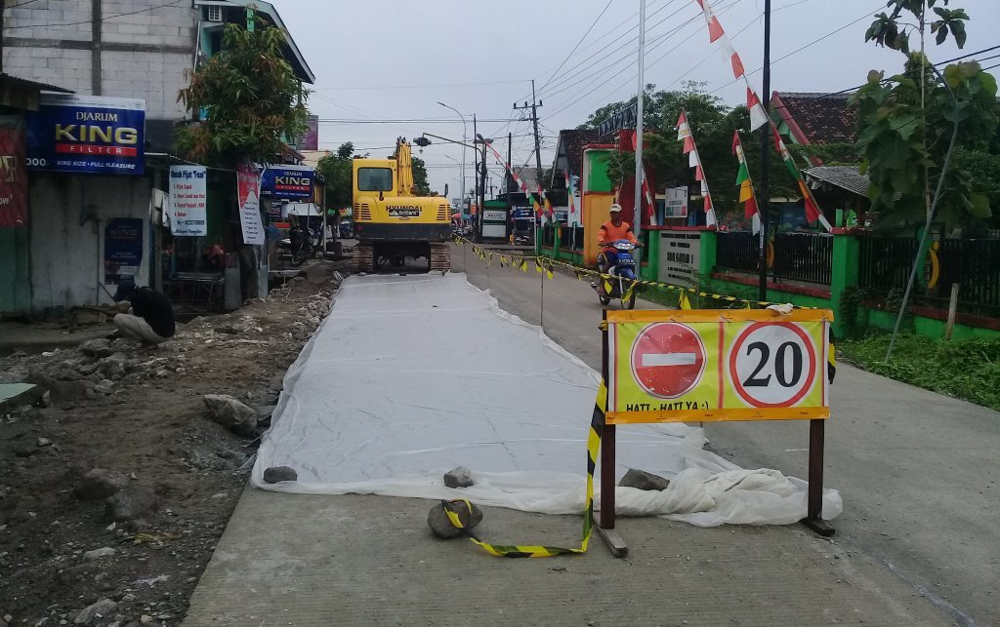
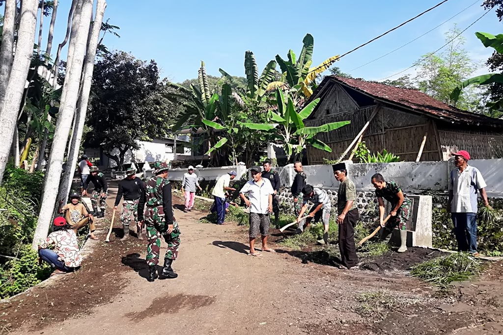
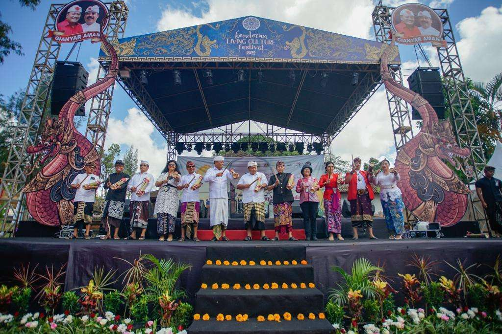
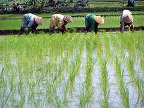
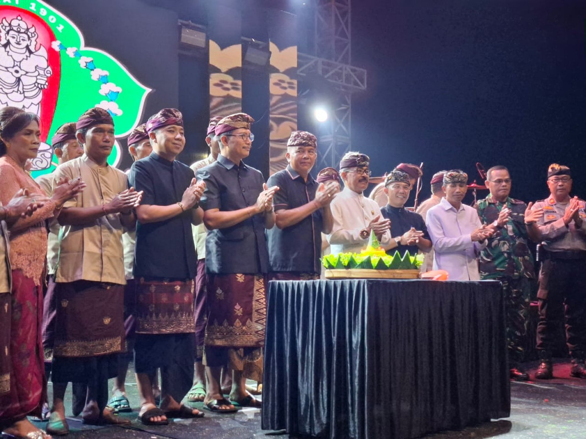

| Berita Desa | |||
|
|||
| Beranda | Profil | Galeri | Berita | Kontak |
Pembangunan Jalan Jalan desa selesai dibangun dan siap digunakan untuk masyarakat beraktivitas. Gotong Royong Warga membersihkan lingkungan bersama di hari minggu melalui pengumuman yang telah diberikan dari pemdes ke tiap RT. Festival Desa Festival berlangsung meriah. Pembuatan Website Sistem Informasi Desa (SID)Mahasiswa Universitas Muhammadiyah Palangkaraya saat melakukan KKN berhasil menciptakan Website SID untuk keperluan Warga desa agar mendapat informasi terbaru melalui media digital Pembentukan Kelompok Tani Pembentukan Kelompok Tani di Desa maju sejahtera merupakan komitmen pemerintah desa dan daerah untuk meningkatkan kualitas pertanian yang ada di desa. Ulang Tahun Desa Acara ulang tahun desa maju sejahtera ini merupakan kegiatan tiap tahun yang dananya di dapat dari ApbDes, sponsor dan iuran warga. |
| © 2026 Desa Maju Sejahtera (Desa Ini Hanya Fiksi Untuk Keperluan Tugas) |